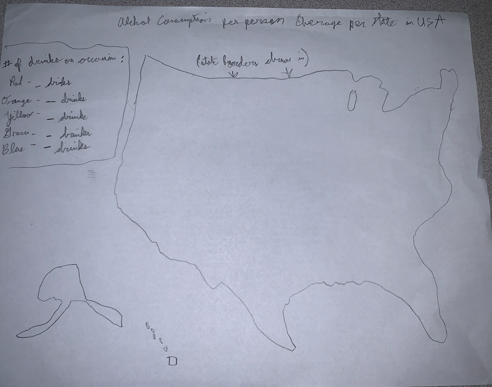
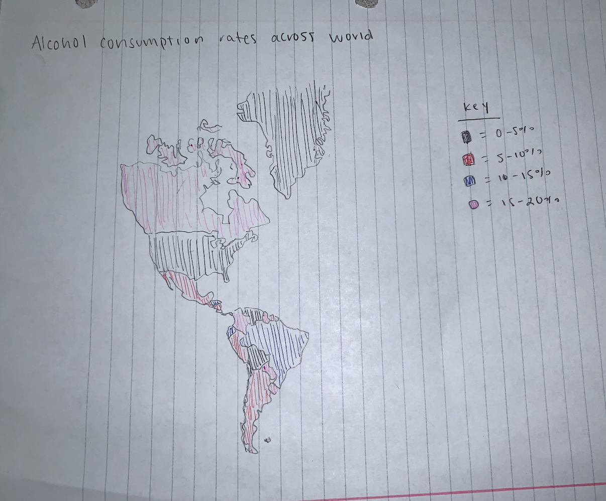
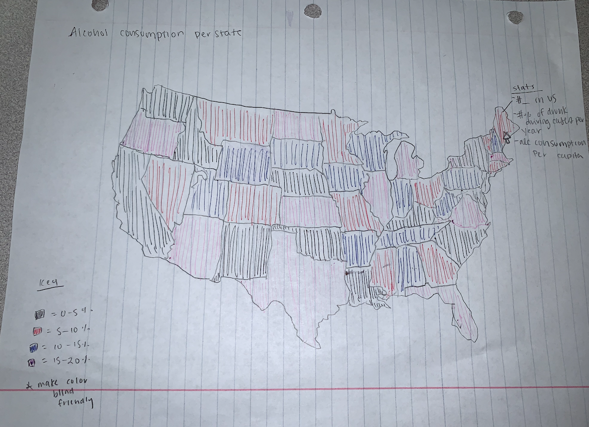

The CDC defines excessive alcohol use in two forms.
The first is binge drinking, which is drinking 5 or more drinks on an occasion for men or 4 or more drinks on an occasion for women.
The second is or heavy drinking, which is drinking 15 or more drinks per week for men or 8 or more drinks per week for women. Excessive alcohol consumption is associated with an increased risk of many health problems, such as liver disease and unintentional injuries.
Aidan's macro-summary
understandability: Is it easy for users to understand what you are trying to communicate? Yes. There is a title + map key.
Do users know what to do without reading the instructions? Not really clear since the wireframe is very barebones but hypothetically yes. We think that there should have been more colors added to make it more clear.
achievability: Is this achievable? yes. :-)
perceptability: we are planning on using colors + patterns in order to help those who are visually impaired (color blindness, etc.)
Aidan's micro-summary
understandability: Is it easy for users to understand what you are trying to communicate? Yes. There is a title + map key.
Do users know what to do without reading the instructions? Not really clear since the wireframe is very barebones but hypothetically yes. More colors would have been nice
achievability: yeah
perceptability: we are planning on using colors + patterns in order to help those who are visually impaired (color blindness, etc.)
Elizabeth's macro-summary
understandability: Colors could have been a bit better chosen. maybe like all blue but varying opacity/intensity. also kind of confusing bc of titles + map key
achievability: yes :)
perceptability: we are planning on using colors + patterns in order to help those who are visually impaired (color blindness, etc.)
Elizabeth's micro-summary
understandability: see above
achievability: ye
perceptability: we are planning on using colors + patterns in order to help those who are visually impaired (color blindness, etc.)
Final design


elements selected + why: we decided to use Aidan's statistics and Elizabeth's map.
Milestone 3 Labor Division(about.html):
Aidan: Analyze wireframes, complete final prototype
Elizabeth: Create about.html, fill in information
Milestone 4 Labor Division(index.html):
Aidan: Macro-Page (Global)
CSS framework for Alcoholism Displays in 10 Most Populated Countries
Elizabeth: Micro-Page Summary
CSS framework for Alcoholism Displays in each of 50 states of the USA